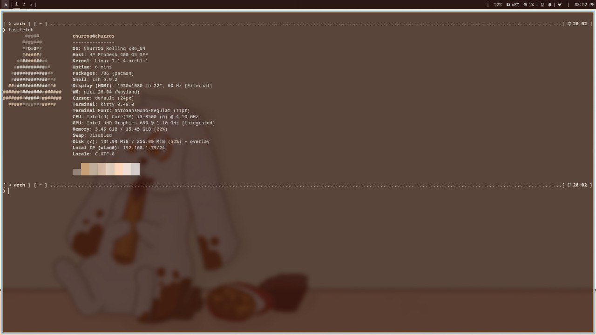

Wiki ChurrOS
Tu ruta por ChurrOS.
El manual completo de ChurrOS 1.4: instala, aprende, personaliza y recupera tu sistema.

El manual completo de ChurrOS 1.4: instala, aprende, personaliza y recupera tu sistema.
